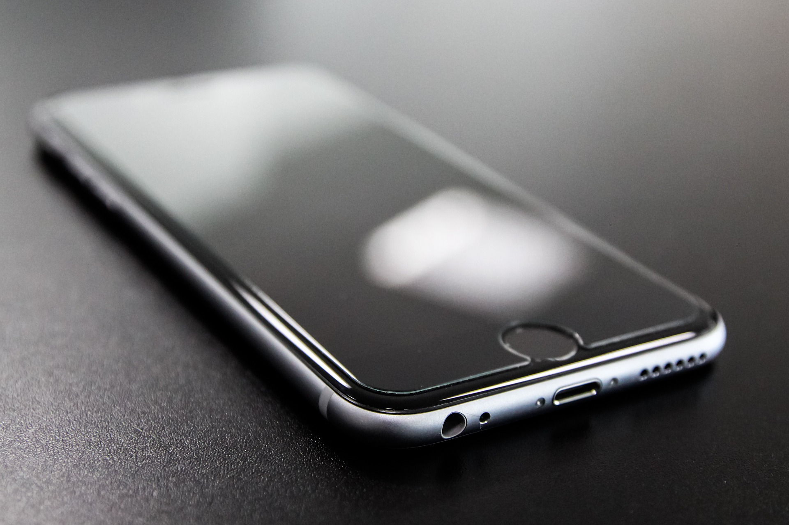
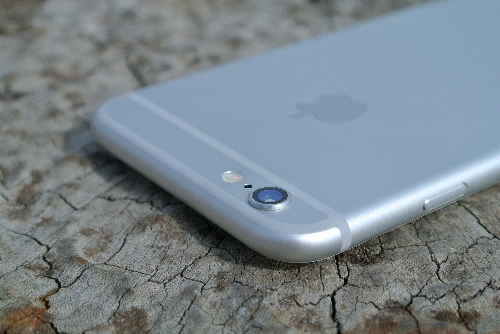
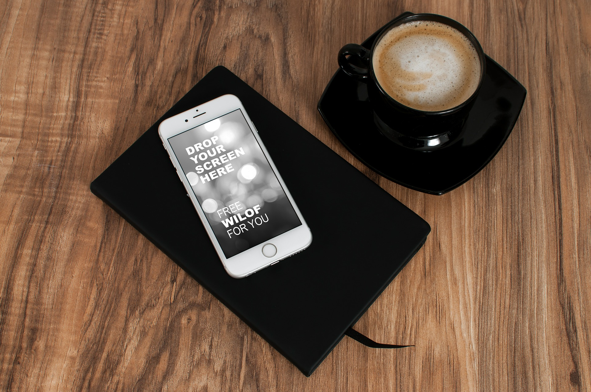

Iphone 6 Review: Excellence exemplified
by Sethi Badhan 12 Nov 2015 1:30 PM
The year is 2014. It’s been seven years since the Keynote announcement that put Apple on the mobile map – and put its competition on notice. Six years since Google launched its own smartphone platform, which it quickly converted from a BlackBerry clone to something much more familiar. Four years since Microsoft revamped its archaic (but powerful) mobile software into something less archaic (and also less powerful). Three years since Palm imploded trying to push a mobile platform the world wasn’t ready for. And about a year since BlackBerry collapsed before un-collapsing. Sort of. Whether you’re an Android or Windows Phone devotee, a BlackBerry maven or a webOS wash-up, a Jolla sailor or an Apple loyalist, you can’t deny Apple’s significance to the smartphone world. From its big shakeups to its more timid iterations, nearly every iPhone has seen record-smashing success on opening weekend and new iPhone 6 and 6 Plus are no exception.
The iPhone 6 is the smaller of the two new devices, but it’s still bigger than any iPhone that’s come before. That goes for its software too, the eighth generation of iOS containing more tweaks and adjustments than its tame cosmetic update would suggest. The big question is whether these changes have allowed Apple to keep pace with the competition, whose large devices and powerful operating systems have been steadily encroaching on the iPhone’s mind share. The other big question is, of course, whether you should buy one.
Specs & Hardware
The design of the iPhone 6 and iPhone 6 Plus are influenced by that of the iPad Air with a glass front that is curved around the edges of the display, and an aluminum rear that contains two plastic strips for the antenna. Both models come in gold, silver, and "space gray" finishes. The iPhone 6 has a thickness of 6.9 millimetres (0.27 in), while the iPhone 6 Plus is 7.1 mm (0.28 in) in thickness; both are thinner than the iPhone 5S and iPhone 5C, with the iPhone 6 being Apple's thinnest phone to date. The most significant changes to the iPhone 6 and iPhone 6 Plus are its displays; both branded as "Retina HD Display" and "ion-strengthened", the iPhone 6 display is 4.7 inches in size with a 16:9 resolution of 1334x750 (326 PPI, minus one row of pixels), while the iPhone 6 Plus includes a 5.5-inch 1920x1080 (1080p) display (401 PPI). The displays use a multiple-domain LCD panel, dubbed "dual-domain pixels"; the RGB pixels themselves are skewed in pattern, so that every pixel is seen from a different angle. This technique helps improve the viewing angles of the display.
To accommodate the larger physical size of the iPhone 6 and iPhone 6 Plus, the power button was moved to the side of the phone instead of the top to improve its accessibility. The iPhone 6 features a 6.91 Wh (1810 mAh) battery, while the iPhone 6 Plus features a 11.1 Wh (2915 mAh) battery. Unlike the previous model, the rear-facing camera is not flush with the rear of the device, and has a slight "bulge" around the lens. It has a dual-core 1.4 GHz Cyclone processor (ARM v8-based). Both models include an Apple A8 system-on-chip, and an M8 motion co-processor—an update of the M7 chip from the iPhone 5S. The main difference between the M8 and the original M7 coprocessor is that the M8 also includes a barometer to measure altitude changes. Phil Schiller touted that the A8 chip would provide, in comparison to the 5S, a 25% increase in CPU performance, a 50% increase in graphics performance, and less heat output. Early hands-on reports suggested that the A8's GPU performance might indeed break away from previous generations doubling of performance at each yearly release, scoring 21204.26 in Base mark X compared to 20253.80, 10973.36 and 5034.75 on respectively the 5S, 5 and 4S.
The expanded LTE connectivity on the iPhone 6 and iPhone 6 Plus is improved to LTE Advanced, with support for over 20 LTE bands (7 more than the iPhone 5S), for up to 150 Mbit/s download speed, and VoLTE support. Wi-Fi performance has been improved with support for 802.11ac specifications, providing speeds up to 433.0581 Mbit/s—which is up to 3 times faster than 802.11n,] along with Wi-Fi Calling support where available. The iPhone 6 and iPhone 6 Plus add support for near-field communications (NFC), which is used exclusively for Apple Pay—a new mobile payments system which will allow users to store their credit cards in Passbook for use with online payments and retail purchases over NFC. NFC support is restricted to Apple Pay only, and cannot be used for any other purposes (such as sharing content with other iPhone users). While still 8 megapixels in size, the iPhone 6's rear-facing camera includes a new sensor which, like the camera in the iPhone 5S, has 1.5 micron pixels, an f/2.2 aperture lens, and the ability to shoot 1080p video at either 30 or 60 frames per second. The camera also includes phase detection autofocus. It can also record slow-motion video at either 120 or 240 frames per second. The iPhone 6 Plus camera is nearly identical, but also includes optical image stabilization. The front-facing camera was also updated with a new sensor and f/2.2 aperture, along with support for burst and HDR modes.
Software

The iPhone 6 and iPhone 6 Plus ship pre-loaded with iOS 8, while the iPhone 5S shipped pre-loaded with iOS 7. Apps are able to take advantage of the increased screen size in the iPhone 6 and 6 Plus to display more information on-screen; for example, the Mail app uses a dual-pane layout similar to its iPad version when the device is inlandscape mode on the iPhone 6 Plus. As it uses an identical aspect ratio, apps designed for the iPhone 5, 5C, and 5S can be upscaled for use on the iPhone 6 and 6 Plus. To improve the usability of the devices' larger screens, an additional "Reachability" gesture was added; double-tapping the Home button will slide the top half of the screen's contents down to the bottom half of the screen. This function allows users to reach buttons located near the top of the screen, such as a "Back" button in the top-left corner.
Camera
Some corners of the iPhone still bear the shadow of the company’s skeuomorphic history, and the camera viewfinder is one of them. It’s a nice-looking piece of software, but it trades intuitive functionality for cosmetics: the sliding mode adjuster is a frustratingly small touch target (you can swipe on the screen to change modes, but this isn’t self-evident and no tutorial exists to make this clear), and the new exposure control is a press-and-hold affair that’s awkward and also uncomfortably small. Despite the larger canvas now at its disposal, Apple is still designing for an undersized screen.
Get past that and you’ll probably have a good time shooting with the 8MP iSight camera, which features a five-element lens and an f/2.2 aperture (along with sapphire protection for its protruding lens, which should help it survive all the tabletops it’s going to be resting on). The iPhone 6 takes a novel approach to compensating for hand-trembles, with the software snapping four shots almost at once, then combining them for a clearer photo. On the down side, the colors it produces seem a bit muted, and something about the camera’s optics package makes it very susceptible to lens flare. The photos are also noisier than we like, with digital fuzz sometimes evident on close inspection, and HDR isn’t as effective as it is on other phones at bringing out highlights in dark areas. Dark shots themselves are acceptable, and not much more.
Conclusion
The folks in Cupertino have brought the iPhone into 2014 in typical Apple fashion: by implementing deceptively simple upgrades with admirable finesse. The new iPhone is more than just a bundle of software refinements mated to a larger display; it’s a near-perfect blend of new ideas and proven, honed features.
We say “near-perfect” because there’s certainly room for improvement here. The fourth- and fifth-generation iPhones were stunning pieces of hardware design, and the iPhone 6 doesn’t quite live up to that legacy. Add to that the few bumps and bugs we found in iOS 8 (along with the spectacular failure of its 8.0.1 OTA update) and you’re reminded that, for all its vaunted precision, the iPhone is, in some ways, just another smartphone. It’s also a particularly expensive one: as the Nexus 5 and OnePlus One demonstrate, you can find devices of similar or greater capability for much less.
But the iPhone 6 is a smartphone of uncommon balance and grace – qualities tough to pin down on paper, but obvious when they’re right in front of you. It comes with the highest-quality ecosystem of apps, software, and accessories you can find, and some of the best customer service we’ve ever experienced. Any way you look at it, the value of that total package is very compelling. Whether you put the iPhone 6 at the top of your list of world’s greatest smartphones is ultimately up to you … but you’d be crazy not to include it at all.